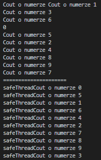

Synchronization of simultaneous use std::cout
In this entry I will show you how to use std::cout on many threads. The code will be protected against typical problems when projecting multithreaded code. If multiple threads attempt to access the cout simultaneously, the data generated in the shell the output will be interestingly distorted.
#include <iostream>
#include <thread>
#include <mutex>
#include <sstream>
#include <vector>
struct safeThreadCout : public std::stringstream
{
static inline std::mutex cout_mutex;
~safeThreadCout()
{
std::lock_guard<std::mutex> l{cout_mutex};
std::cout << rdbuf();
std::cout.flush();
}
};
static void print_cout(int id)
{
std::cout << "Cout o numerze " << id << '\n';
}
static void print_safeThreadCout(int id)
{
safeThreadCout{} << "safeThreadCout o numerze " << id << '\n';
}
int main()
{
std::vector<std::thread> threads;
for (size_t i{0}; i < 10; ++i)
{
threads.emplace_back(print_cout, i);
}
for (auto &thread : threads)
{
thread.join();
}
std::cout << "=====================\n";
threads.clear();
for (size_t i{0}; i < 10; ++i)
{
threads.emplace_back(print_safeThreadCout, i);
}
for (auto &thread : threads)
{
thread.join();
}
}Discussing the code.
My choice fell on stringstream to use the operator freely <<. When calling the destructor, a lock is applied and the buffer is passed on for display.Then we create two functions to display the given message, and a number which is intended to be the call number. I won't discuss them in more detail, as they are very trivial. We create a vector with 10 threads, which will call the function we implemented above. With this, we can go to tests.
Result
A short talk about how the output works when using our implementation.
We create a stringstream object, then we apply a blockade to a globally available mutex. At this point, we
get access to the content of the stream, the ability to output and free it. std::flush is used to get
instant access to buffer content.

Code use in this entry: Code.